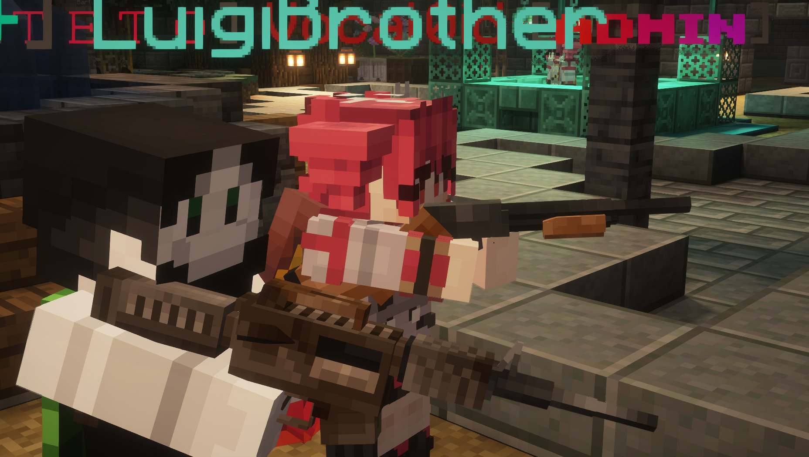

THE LUIGIBROTHER.PARTY SMP
Custom Models and Items
We have a regularly updated resource-pack with custom models, courtesy of our server members. Several custom items are available in the in-game shop, in exchange for in-game currency.
Custom Weapons Datapacks
We have custom datapacks created by our staff that adds fully-functional hitscan guns as well as other weapons.
Many Plugins and Custom Systems
We have various plugins which allow us to create many systems and to overall improve the player's experience. For example, there is an in-game shop, chat can be customized in various ways, and there is an options menu for individual customization.
Ranking System
Members are promoted to the next rank based on playtime, currently there are five player ranks. Upon being promoted members gain various privileges, such as more player homes, less money lost on death, and various commands, with more to come in the future.